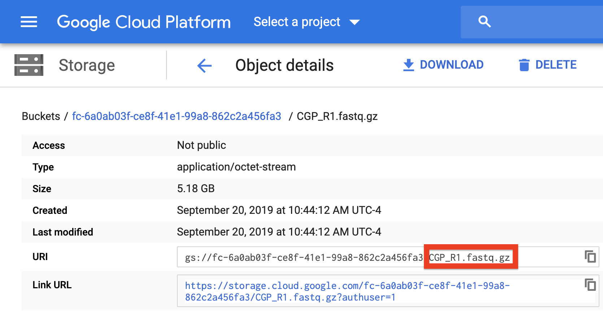
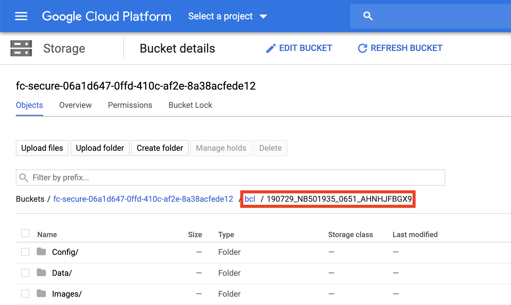

Inputs/Outputs¶
The input_csv_file¶
To instruct the workflow, you must create a sample sheet, called the input CSV file, that contains sample names, paths to sequencing data on the workspace bucket, and any metadata you wish to include on Alexandria.
Formatting your input_csv_file for FASTQ files¶
For processing a sequencing directory full of BCL files, see the below section instead.
Write your input csv file in a text editor or a spreadsheet manipulation program such as Microsoft Excel and save your file as a comma-separated value (.csv) file. The input CSV file must have column headers and contains the following in whatever order:
(REQUIRED) the ‘Sample’ column, the sample/array names that must prefix the respective .fastq or .fastq.gz files. Any preexisting count matrices must be prefixed in the same way.
(RECOMMENDED) both ‘R1_Path’ and ‘R2_Path’ columns, the paths to .fastq/.fastq.gz files on the bucket. Alternatively, see the section on Understanding the dropseq_default_directory parameter.
(OPTIONAL) Other metadata columns that will be appended to the alexandria_metadata.txt (tab-delimited) file generated after running Cumulus. Column headers must match exacty the names of attributes found in the Alexandria Metadata Convention. Labels outside of this convention will be supported in the future

To verify that the paths you listed in the file are correct, you can navigate to your bucket using the instructions listed above and locate your sequence data files. Click on each file to view its URI (gsURL), which should resemble the format gs://<bucket ID>/path/to/file.fastq.gz in the case of gzip-compressed FASTQ files (regular FASTQ files are fine too). The locations you should enter in the path columns of your input CSV file can be all of the characters following the bucket ID and trailing slash, in this case path/to/file.fastq.gz. 
Formatting your input_csv_file for bcl2fastq¶
Due to legal requirements, the bcl2fastq workflow made by the Cumulus Team is only available for use by Broad Institute affiliates. Affiliates must create a Docker account using their broadinstitute.org email address, download Docker Desktop, and log in through typing docker login in their terminal. Only then can you launch the bcl2fastq workflow on Alexandria or Terra.
If you are not an affiliate, you can download the Bcl2Fastq software here and run it locally on a computer with plenty of disk space. Then see the above section for writing a csv to process your FASTQs.
Write your input csv file in a text editor or a spreadsheet manipulation program such as Microsoft Excel and save your file as a comma-separated value (.csv) file. The input CSV file must have column headers and contains the following in whatever order:
(REQUIRED) the ‘Sample’ column, the sample/array names that are found in each sequencing directory’s sample sheet. Any pre-existing count matrices must have the sample names prefix each .txt.gz file.
(REQUIRED) ‘BCL_Path’ column, the paths to the sequencing run directories on the bucket. Ex:
path/to/191231_NB501935_0679_AHVY52BGXB/(OPTIONAL) Other metadata columns that will be appended to the alexandria_metadata.txt file generated after running Cumulus. Column headers must match exacty the names of attributes found in the Alexandria Metadata Convention. Labels outside of this convention will be supported in the future.

To verify that the paths you listed in the file are correct, you can navigate to your bucket using the instructions listed above and locate your sequence data files. Click on each file to view its URI (gsURL), which should resemble the format gs://<bucket ID>/path/to/sequencing_run_directory/ in the case of sequencing run directories. The locations you should enter in the path columns of your input CSV file should be all of the characters following the bucket ID and trailing slash, in this case path/to/sequencing_run_directory.

Understanding the dropseq_default_directory parameter¶
The use of this variable is not essential and is only meant for quick and convenient CSV writing. If the snapshot you are using requires dropseq_default_directory and you do not wish to use it, just enter an empty string: "".
Refer to the above spreadsheet example. There are four samples which each have two FASTQ reads. All FASTQ files are found in a folder located at the root of the bucket called mouse_fastqs. Since they are all located in the same directory, one could set mouse_fastqs as the dropseq_default_directory and no longer need to have R1_Path and R2_Path columns. 
If the user has R1_Path and R2_Path columns but leaves spreadsheet cells left blank, the pipeline will search in the dropseq_default_directory for the corresponding sample.

Here the pipeline will search the gs://[bucket ID]/mouse_fastqs directory for any spreadsheet cells left blank; DMSO_R2.fastq.gz, LGD_R1.fastq.gz, LKS_CGP_R1.fastq.gz, and LKS_CGP_R2.fastq.gz. The specific pattern the pipeline searches for is <Sample Name>*<R1 or R2>*.fastq.gz.
Inputs of the dropseq_cumulus workflow¶
Basic usage¶
| Variable | Description |
|---|---|
| bucket | gsURL of the workspace bucket to which you have permissions, ex: gs://fc-e0000000-0000-0000-0000-000000000000/. This value is not exposed on Alexandria and is locked to the workspace bucket. |
| input_csv_file | Sample sheet (comma-separated value file) uploaded in the miscellaneous tab of this study’s Upload/Edit Study Data page. Formatting must adhere to the criteria! |
| reference | Genome for alignment. Supported options: hg19, mm10, hg19_mm10, or mmul_8.0.1 |
| run_dropseq | Yes: run Drop-seq pipeline (sequence alignment and QC). Sequencing data must be uploaded to the Google bucket associated with this study. |
| is_bcl | Yes: bcl2fastq will be run to convert all of your BCL directories to fastq.gz. No: all of your data is already of fastq.gz type. |
| dropseq_default_directory | Sequence data directory name for sequence uploaded to the SCP study google bucket. Ex: Enter data/mouse_fastqs for folder mouse_fastqs located at gs://study bucket ID/data/mouse_fastqs/ If not applicable, list paths in the input_csv_file. |
| dropseq_output_directory | Path to folder name for Drop-seq outputs (aligned data, count matrices, etc.). All folders in this path will be created if they do not exist. Ex: Entering data/20190909/aligned stores Drop-Seq outputs at gs:///data/20190909/aligned/ |
| run_cumulus | Yes: run Cumulus (generate metadata, cluster files, coordinate files for data exploration in Alexandria). If run_cumulus Yes and run_dropseq No: each expression matrix must be located within its sample subdirectory in the SCP study google bucket's dropseq_output_directory. |
| cumulus_output_directory | Path to folder name for cumulus outputs (expression matrix, metadata, cluster, and coordinate files). All folders in this path will be created if they do not exist. Ex: Entering data/20190909/analysis stores Drop-Seq output files at gs://study bucket ID/data/20190909/analysis/ |
Advanced usage¶
| Variable | Description |
|---|---|
| preemptible, default=2 | Number of attempts using a preemptible virtual machine before requesting a higher-cost, non-preemptible instance (default = 2). See Google Cloud documentation. |
| zones, default=“us-east1-d us-west1-a us-west1-b” | The ordered list of zone preferences for requesting a Google machine to run the pipeline. See Google Cloud documentation page. |
| cumulus_output_prefix, default=“sco” | Optional prefix for cumulus files to distinguish them from files from a different job. |
| alexandria_version, default=“0.1” | Version of the shaleklab/alexandria dockerfile to use. |
| dropseq_tools_version, default=“2.3.0” | Version of the regevlab/dropseq dockerfile to use for the respective version of dropseq-tools. |
| cumulus_version, default=“0.8.0:v1.0” | Version of the regevlab/cumulus dockerfile to use for the respective version of cumulus. |
Optional inputs exposed on Terra¶
See the Drop-seq Pipeline workflow documentation.
NOTE: dropEst does not account for strandedness and therefore its usage is not recommended. We recommend kallisto-bustools_cumulus workflow instead.
See the Cumulus workflow documentation.
See the bcl2fastq manual
Outputs of the dropseq_cumulus workflow¶
When running the Drop-Seq pipeline and/or Cumulus through dropseq_cumulus, the workflow yields the same outputs as its component workflows. You can see those documentations in the section above.
Explicitly, dropseq_cumulus presents the Single-Cell Portal with the alexandria metadata file (alexandria_metadata.txt), the dense expression matrix (ends with .scp.expr.txt), and the two coordinate files (end with .scp.X_diffmap_pca.coords.txt and .scp.X_fitsne.coords.txt).